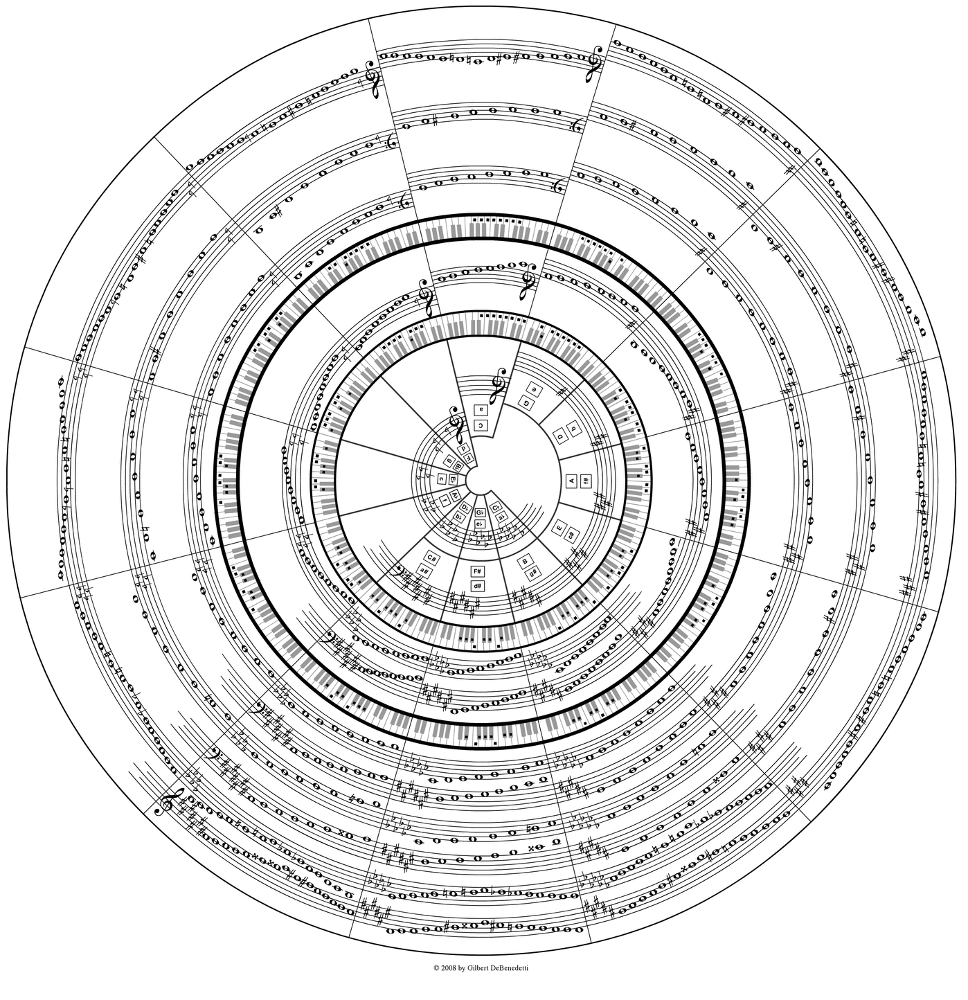

Automatic Music Transcription
Rand ASSWAD
Introduction
1
Background
1.1
Automatic Music Transcription
1.1.1
History and community
1.1.2
Motivation
1.1.3
Underlying tasks
1.2
Physical definition of acoustic waves
1.3
Perception of sound and music
1.3.1
Fundamental frequency and pitch
1.3.2
Perception of intensity
1.4
Audio signal processing
1.4.1
Discrete-time signals
1.4.2
Discrete Fourier Transform (DFT)
2
Pitch analysis
2.1
Introduction
2.2
Single pitch
2.2.1
Time domain
2.2.2
Spectral domain
2.2.3
Application Example
2.3
Multiple pitch
2.3.1
Harmonic Amplitudes Sum
2.3.2
Spectral factorisation
3
Temporal segmentation
3.1
Introduction
3.2
Onset Detection Function (ODF)
3.2.1
High Frequency Content (HFC)
3.2.2
Phase Deviation
3.2.3
Complex Distance
3.3
Thresholding & Peak-picking
3.4
Results
4
Conclusion
References
PDF book
HTML standalone version
Presentation slides
Github repository
Download source code
Automatic Music Transcription
Automatic Music Transcription
Masters Thesis Project
Rand ASSWAD
12 March 2020
